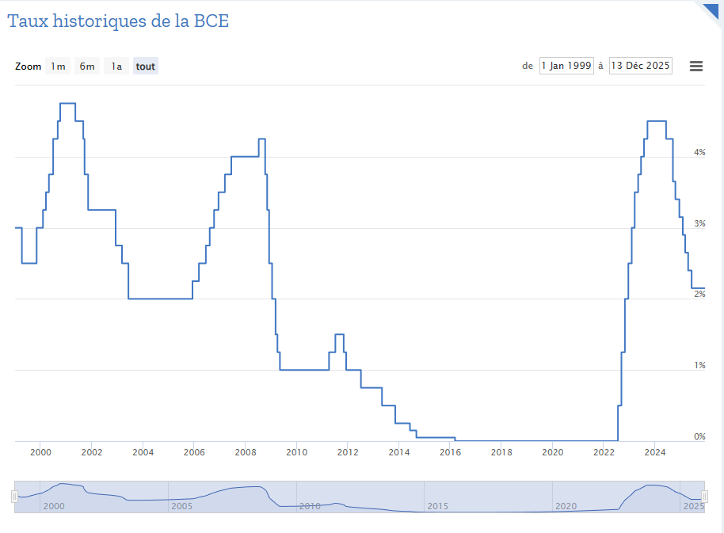

Part du PIB
Patrimoine des ménages
Consommation énergétique
Emplois concernés
Le secteur de l’immobilier joue un rôle essentiel dans l’économie française. Il représente une part importante du PIB, constitue l’essentiel du patrimoine des ménages et mobilise une grande variété d’acteurs : particuliers, entreprises, banques, collectivités locales, notaires, agences et assurances. Dans le circuit économique, il occupe une position centrale, car il génère à la fois des flux réels (constructions, rénovations, ventes) et des flux monétaires (loyers, crédits, taxes etc.). Chaque transaction immobilière entraîne des dépenses annexes et soutient de nombreux métiers, ce qui crée un effet multiplicateur important pour l’ensemble de l’économie.
L’évolution du marché immobilier est fortement liée à la croissance économique et aux cycles conjoncturels. Lorsque l’économie est dynamique et que les ménages disposent d’un revenu stable, la demande de logements augmente, ce qui stimule les prix et la construction. Lors d’un ralentissement, les projets immobiliers sont souvent reportés et l’activité du secteur se contracte. Les taux d’intérêt jouent également un rôle déterminant : des taux faibles facilitent l’accès au crédit et encouragent les achats, alors que des taux élevés freinent la demande et peuvent provoquer une stabilisation ou une baisse des prix. L’offre immobilière reste cependant rigide, car le foncier disponible est limité et les délais de construction sont longs. Cette rigidité explique les fortes variations de prix dans les zones où la demande dépasse l’offre, comme dans les grandes métropoles.

Reflète les fluctuations de la demande et l'influence des cycles économiques.

Montre comment les taux interviennent dans l'accès au crédit.
La transition écologique occupe une place croissante dans l’immobilier. Le secteur résidentiel et tertiaire est responsable de 43% de la consommation énergétique en France en 2023. Les normes environnementales se renforcent et la rénovation thermique est devenue une priorité nationale. La construction neuve doit respecter des standards durables pour l’isolation, la consommation d’énergie et l’empreinte carbone. Cette transition génère un nouveau dynamisme économique : isolation performante, matériaux écologiques, solutions de chauffage propres, équipements connectés pour réduire les dépenses énergétiques.
Le numérique transforme le secteur : estimation dess prix, analyse des tendances, évaluation des risques de crédit, bâtiments intelligents avec capteurs et systèmes automatisés pour optimiser consommation d’énergie, confort et sécurité. L’innovation technologique dynamise les métiers et crée de nouvelles opportunité.
Même s’il reste très local, l’immobilier français attire aussi des investisseurs étrangers, notamment dans les grandes métropoles ou dans l’immobilier commercial. Paris ou Lyon sont perçues comme des valeurs sûres, ce qui renforce l’attractivité du marché français au niveau international.